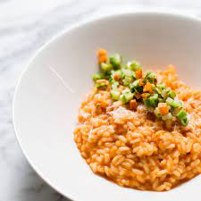

<h1> risoto</h1>
  <
<li> ovos
<li>2 xícaras (chá) de farinha de trigo
<li>1 xícara (chá) de chocolate em pó ou achocolatado
<li>1/2 xícara (chá) de óleo
<li>1 colher (sopa) de fermento em pó
<li>1 pitada de sal
<li>Cobertura:
<li>1 colher (sopa) de manteiga
<li>1 xícara (chá) de açúcar
